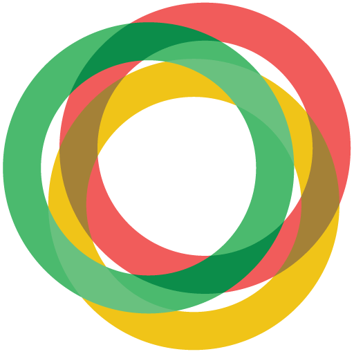

Publications
My list of academic publications is short, and this selection of them even shorter.
Op zoek naar

See also my ORCID profile, which features a more complete list.
On debt and debt collection
The topic of my PhD and a continuing research interest: indebtedness and debt collection practices.
Storms, E., & Verschraegen, G. (2019). Time regimes in debt collection and mediation. Time & Society, 28(4), 1382–1408. https://doi.org/10.1177/0961463X18767597
I enjoyed thinking and writing about this combination of topics, even
though it is about a harsh social problem.
The article presents a combination of theoretical sociology (to think
about debt as both precisely calculable and future oriented), and
fieldwork on debt collection and debt counseling.
Files: PDF,
.bib
Storms, E. (2022). Schuldinvordering en de schuldenspiraal. Hoe het “doen betalen” van achterstallen schuldproblemen verergert. In B. Cantillon & S. Latré (eds.), U-Turn 2021. Wegwijzers naar een nieuw sociaal contract (pp. 151–161). UPA. https://doi.org/10.46944/9789461173287.14
Beknopte introductie tot hoe schuldinvordering kan bijdragen tot
een schuldenspiraal en vergroting van de schuldenproblematiek.
Files:
PDF,
.bib
Storms, E. (2020). Schuld in meervoud. Een sociologische verkenning van schuldinvordering tussen economie, recht en sociaal werk. Doctoraal proefschrift. Universiteit Antwerpen. www.eliasstorms.net/schuld-in-meervoud/
Zie afzonderlijke pagina.
Other publications on debt and indebtedness in Belgium:
Storms, E. (2018), Spanningen en uitdagingen na 20 jaar Collectieve Schuldenregeling, Tijdschrift voor Insolventie- en Beslagrecht, 0: pp. 59-60
Storms, E. (2015), Verward in Schuld, De Gids op Maatschappelijk Gebied, 106 (1): pp. 11-17
Storms, E. (2014), Schuldenoverlast in Vlaanderen. Dimensies van de schuldenproblematiek nader bekeken. In Dierckx, D., Coene, J. en Raeymaeckers, P. (eds.), Armoede en Sociale Uitsluiting. Jaarboek 2014 (pp. 144-64), Acco: Leuven
Storms, E. (2014), Krediet, schuld en betalingsproblemen. In Verschraegen, G., de Olde, C., Oosterlynck, S., Vandermoere, F. en Dierckx, D. (eds.), Over gevestigden en buitenstaanders. Armoede, diversiteit en stedelijkheid (pp. 295-316), Acco: Leuven
Human-Computer Interaction
From 2019 until 2021 I worked in the domain of HCI at KU Leuven. These are some publications stemming from this period, both methodological reflections and research findings.
Storms, E. en Alvarado, O. (2024), Sensitizing for Algorithms: Foregrounding Experience in the Interpretive Study of Algorithmic Regimes, in J. Jarke, B. Prietl, S. Egbert, Y. Boeva, H. Heuer, & M. Arnolds (eds.), Algorithmic Regimes: Methods, Interactions, and Politics (pp. 97-102), Amsterdam University Press, doi.org/10.2307/jj.11895528.6
A methodological reflection on how laypersons’ experiences with technically complex topics such as “algorithms” can be subtly elicited so as to prepare them for participatory research or co-design.
Files:
PDF,
.bib
Storms, E., Alvarado, O. and Monteiro-Krebs, L. (2022), “Transparency is Meant for Control” and Vice Versa: Learning from Co-designing and Evaluating Algorithmic News Recommenders, Proceedings of ACM Human-Computer Interaction, Vol. 6, CSCW2, Art. 405 (November 2022), doi.org/10.1145/3555130
A study on how “algorithmic imaginaries” can be used in the design of
a user interface for news recommendation systems. During one of the
workshops in our attempt at co-design, the link between transparency
and control became apparent.
Files:
PDF,
.bib
Bossens, E., Storms, E. en Geerts, D. (2021), Improving the Debate: Interface Elements that Enhance Civility and Relevance in Online News Comments, Human-Computer Interaction – INTERACT 2021, pp. 433-450, doi.org/10.1007/978-3-030-85610-6_25
More
Bunneghem, M., Storms, E., Van Gestel, J., Verschraegen, G.enVolont, L. (2024) (Eds.), Brieven aan een cultuurcriticus: Krijtsporen van Walter Weyns, Pelckmans.
Samen met voormalige collega’s van prof. Walter Weyns, stelden we een boek samen ter gelegenheid van zijn emeritaat. Geen klassiek liber amicorum, maar een verzameling brieven aan Walter, geschreven door vrienden, vakgenoten, en anderen die door hem werden geïnspireerd.